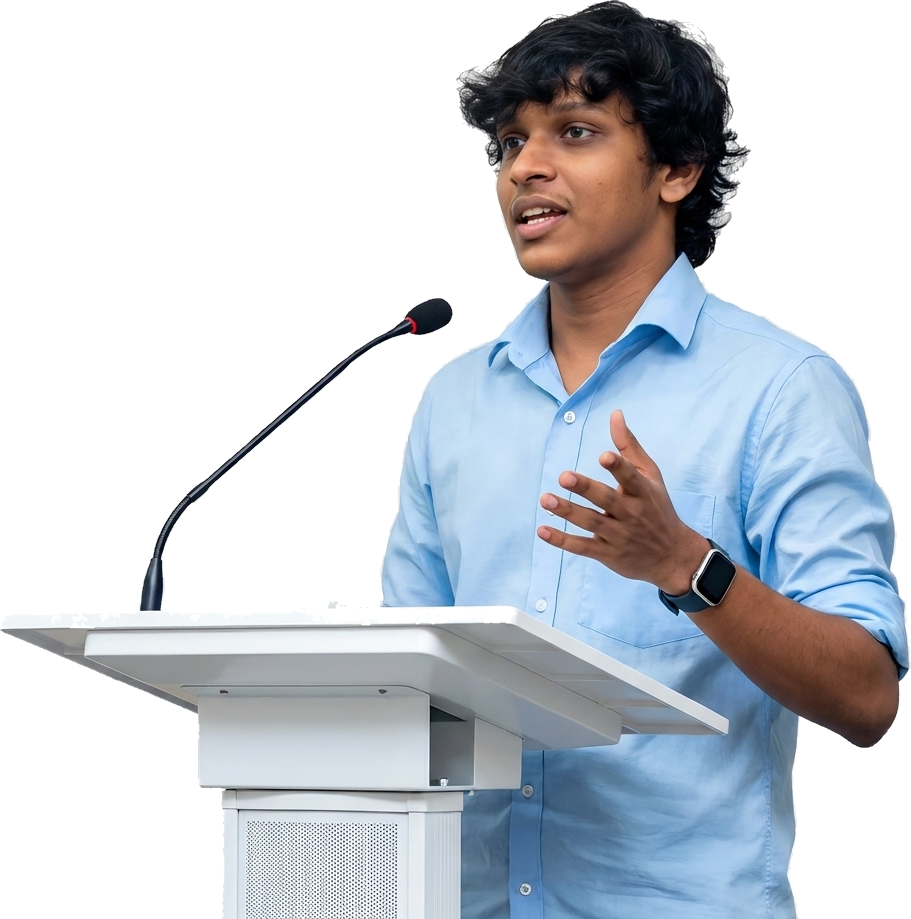

AI Engineer & Solution Architect building production AI systems on Microsoft Azure, including multi-agent orchestration, Agentic RAG, MCP tool integration, and the LLMOps pipelines that ship them safely.

I design enterprise AI systems end-to-end, from multi-agent architectures and Agentic RAG over enterprise data to the LLMOps pipelines and Responsible AI guardrails that keep them running safely. Increasingly working as a solution architect: target architectures, build-vs-buy decisions, and design reviews on cross-team AI initiatives. Currently reading for an MSc in Applied Artificial Intelligence at the University of Westminster, and speaking about AI transformation to student and professional audiences across Sri Lanka.